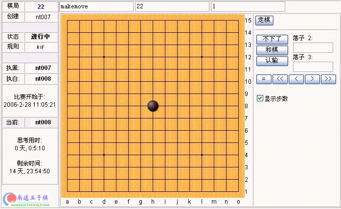

爱五子棋慢棋系统使用说明
#1 爱五子棋慢棋系统使用说明 作者：有志青年 发表时间：2008-2-4 14:41:47
爱五子棋根据需要自行设计制作的慢棋系统，使用对象是五子棋爱好者，若需要更专业的慢棋系统请访问浙江慢棋系统或者国外的慢棋系统。
我们的慢棋系统所有功能都是建立在您登录之后！
登录之后可以选择顶端的“功能菜单”下拉“慢棋系统”进入。
慢棋和金币挂钩的规则如下：
个人金币少于10者无法进入慢棋系统。
每人的分值＝（胜局数－负局数）*3+和局数*1
对局双方：
1、两者分值相差小于100的，胜加50个金币，负减10金币，和棋不变
2、若两者分值相差大于100胜负不影响金币
3、逃走的，一律扣10个金币，胜者不加
我们的慢棋系统可以实现以下功能：
一、创建棋局
创建棋局的时候可以选择：无禁手规则、rif规则，rif规则可以指定开局或者随意开局；
创建者默认执黑，若是rif规则可以三手交换；
创建的棋局每局积分2分，不可修改。
二、查找新局

凡是还没有开展的棋局，也就是只有创建者而没有参战者的棋局都在这里，你可以加入，自己的棋局虽然也在，但是不能加入。
三、查看对局

这里列出正在对阵的棋局，您可以学习参观
四、历史对局
已经结束，分出胜负的棋局
五、我的棋局
您自己正在对阵，还没有结束的棋局
六、对局棋谱

如果是您的对局且轮到您走，则可以看到功能按钮，否则之能查看棋局，当然您可以在上面随意打谱研究。
#2 Re:爱五子棋慢棋系统使用说明 作者：147258 发表时间：2008-3-3 8:24:45
我有一个很重要的问题，为什么五子棋中还有PASS这一手呢？我想不通，无论如何都不能不下子而让对方走啊，随便下哪都比不下子要好啊，真是搞不懂居然还有“不下子”#3 Re:爱五子棋慢棋系统使用说明 作者：先期 发表时间：2008-6-10 13:37:39
既然慢棋系统已经取消了 建议有志老师还是把这样的帖子删掉吧！辛苦了！在此再次感谢您为我们五子棋爱好者的无私贡献！